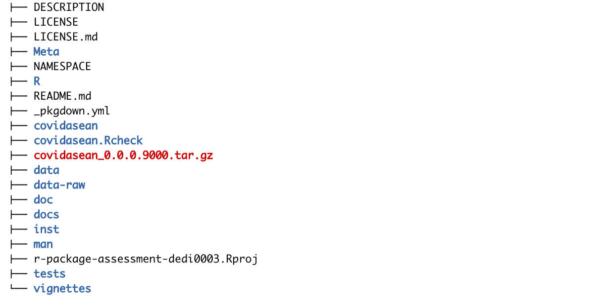
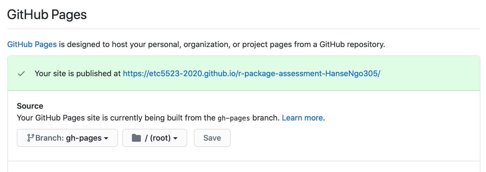
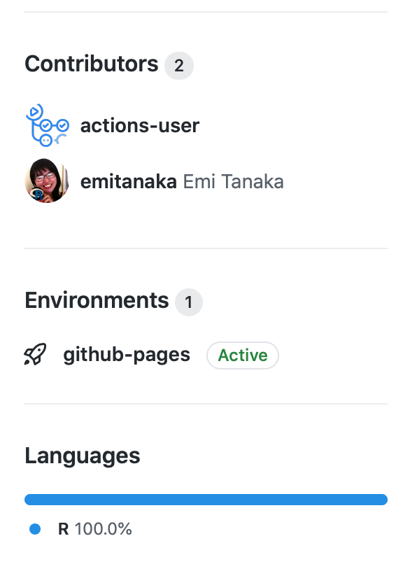
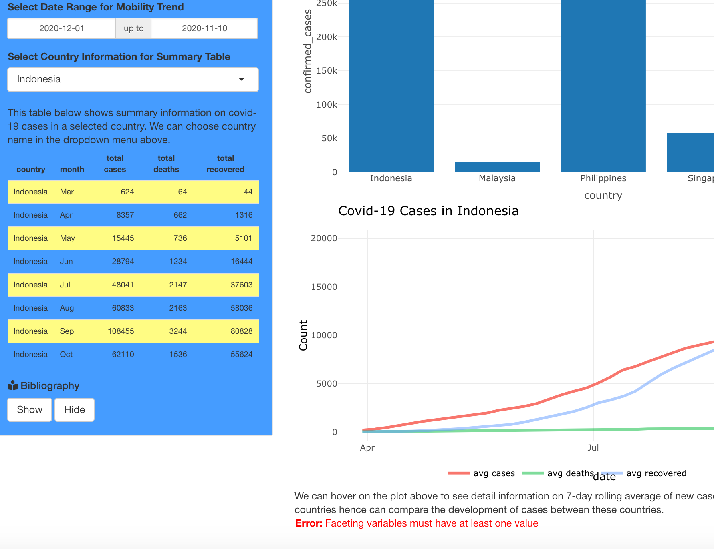
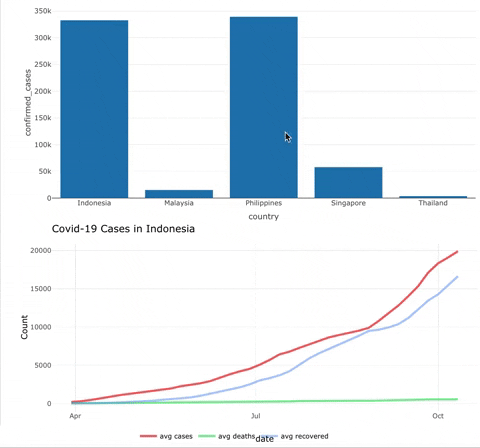
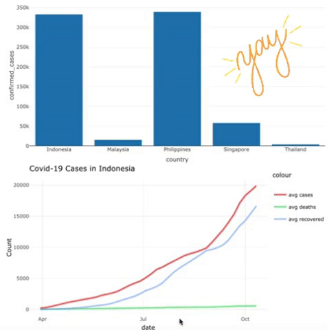
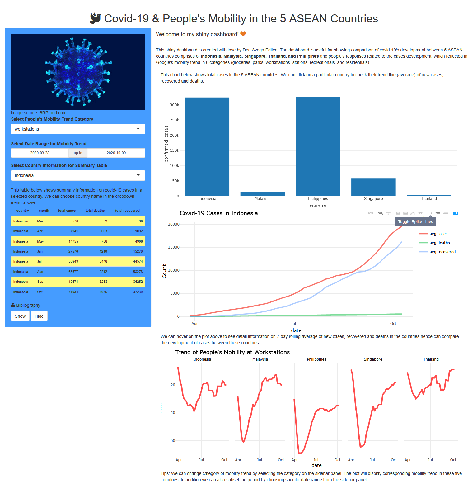

The package I will be reviewing today was created by Dea Avega Editya from my Master class and named covidasean. The covidasean package is a container for a Shiny dashboard Dea made for his previous assignment reporting the COVID situation for fie countries in the ASEAN region.
An app overview
The covidasean package could be downloaded and installed via Dea’s github here. I was able to install and build the package locally without any problems.
To launch the app contained in the package, Dea set up a function called launch_app() which can be typed into the console to call the app out. A minor problem arose when two of the dependence packages he used for his Shiny app, the tidycovid19 and wbstats, were temporarily taken off CRAN. Users who did not have these two packages installed beforehand have to install them remotely from Github. Even though it took extra works, the app launched successfully after the two missing packages were installed.
The package’s structure contained everything we need to build and run a simple package. As we can see from an image below, Dea had created a description, a readme, documentation for the main two of his five R functions (nested under the man folder), vignettes and two unit tests for his package which is enough to get you started with. Moreover, his pkgdown page was promptly set up which really helps navigating through his package. Well done here Dea!

Potential area for improvement
Whilst Dea was doing a wonderful job creating his first R package, there certainly are a lot of areas for improvement. I will divide my recommendation into two separate parts: the package and the Shiny app.
The package
1. The package structure
If you noticed, Dea had a covidsean folder existed inside his R project. I was wondering what that was at first. Turns out it is a sub folder that contains the exact everything that the parent folder has. My best guess was that even though the original class repo was created as a package already, when Dea cloned the repo down to start building his package, he used usethis::create_package("pkgname") to yet again create another package nested inside a package. I figured Dea could have faced a lot of troubles for this. I would totally recommend him removing all the unused folders/ files to avoid clustering and confusion for others.
2. The github pages
Whilst I am happy that his pkgdown page has done me a great favour guiding me through the app, I must confess that it took me a while to locate where it resides. Normally if we specified the source for the Github pages in the Setting as below:

On the right hand side of the “Code” page, next to the Readme, you would find something under the Environments. Clicking on the github-pages would bring you to the action log where you can get access to the pkgdown site by viewing deployment.

I managed to track down Dea’s pkgdown site by visiting the chat he had with our lecturer in the Pull requests tab. I would recommend Dea to set up the Github pages source for easier access to his pkgdown site.
3. The unit tests
Dea had two unit tests for his package. One is for testing the length of the render_case() function which was expected to return 1 for only one plot generated; the other test is for the length of the left_sidebar() function which would expect to return 3 for three inputs he set up in the panel. All tests passed smoothly.
I would say whilst I’m happy that the tests worked for him (I’m sure everyone knew it could be stressful get a pass on a unit test when your deadline draws near), i think these two tests are a little bit simple and somehow obvious to me. Further more, there is not much to expand on these two tests as the object tests are quite simple. I would suggest there are other potential areas to build the unit test on, for example, his table.
Dea set up a table that would return results based on your selected date input. However, there is a latent error embedded in this kind of input, that what would happen if your selected dates are out of the range of the dataset employed? It would return an error like in the picture below:

There are two noticeable criteria for this date input to work:
- Both the begin date and end date have to be smaller than the
max(date)of the dataset.
- The end date has to be bigger than the begin date.
I at first did not notice but when i started to scan out potential candidate for the unit test, this glitch was brought to attention. It is easy to neglect points like this, especially when you work with a lot of inputs and functions, spanning across a lot of pages in your dashboard.
The Shiny app
1. The code
The highlight of the dashboard was the plotly-click charts where, in this case, you can click on each country presented in the confirmed cases chart (the blue bar chart) and subsequently, the line plot underneath will show the corresponding trend lines (the line chart) for your selected country as shown in the extract below.

However, as you can see, there was an error produced when you click on the line instead of the bar as instructed in the guidance. In fact, such error would also occur if you click on the lines in the “Trend of People’s Mobility” chart. So what happened here?
First we will have a look at the source code in the below code block:
# Code to produce bar chart
output$case <- covidasean:::render_case()
# Code to produce line chart
output$trendchart <- renderPlotly({
d <- event_data("plotly_click")
if (is.null(d) return(
case_plot <- covid_asean_df %>%
filter(country == "Indonesia") %>%
ggplot(aes(x = date)) +
geom_line(aes(y = ave_new_cases, color ="avg cases"), size = 1) +
geom_line(aes(y = ave_new_deaths, color ="avg deaths"), size = 1, alpha = 0.5) +
geom_line(aes(y = ave_new_recovered, color ="avg recovered"), size = 1, alpha =0.5) +
theme_minimal() +
ylab("Count")+
ggtitle(paste0("Covid-19 Cases in Indonesia", d$x))+
theme(panel.grid.major.x = element_line(),
panel.grid.minor = element_blank(),
legend.position="top", legend.box = "horizontal")
)
case_plot <- covid_asean_df %>%
filter(country %in% d$x) %>%
ggplot(aes(x = date)) +
geom_line(aes(y = ave_new_cases, color ="avg cases"), size = 1) +
geom_line(aes(y = ave_new_deaths, color ="avg deaths"), size = 1, alpha = 0.5) +
geom_line(aes(y = ave_new_recovered, color ="avg recovered"), size = 1, alpha =0.5) +
theme_minimal() +
ylab("Count")+
ggtitle(paste0("Covid-19 Cases in ", d$x))+
theme(panel.grid.major.x = element_line(),
panel.grid.minor = element_blank(),
legend.position="top", legend.box = "horizontal")
return(ggplotly(case_plot)) %>%
config(displayModeBar = F) %>%
layout(legend = list(orientation = "h", x = 0.2, y = -0.1))
})He had the bar chart created by running a function from an external R script called render_case.R as, i believed, an attempt to refactor the code. We should check that out too:
render_case <- function(){
renderPlotly({
total_case <- covid_asean_df %>%
group_by(country) %>%
summarise(confirmed_cases = sum(new_cases))
total_case %>%
plot_ly(x = ~country, y = ~confirmed_cases) %>%
config(displayModeBar = F)
}) }There are three problems from these two code blocks:
- Dea had not specified the “source” plot which the “plotly_click” event referred to. As a result, whenever Shiny detects a “plotly_click” event, it will change the plot, disregarding of the fact that wrong “clicked” plot will lead to the event plot not displaying correctly. In this case, the source plot is the bar plot whilst the event plot is the “COVID-19 Cases in xxx” line plot.
- Fixing this error is not complicated, however the way Dea structured the code made the fix struggling. The source plot in the app was created by calling out a function. However, the “plotly_click” event might not recognise the “source” identified for a plot put within a function from an external source (i.e not in the same R script with an event plot).
- The code to produce the line chart is quite lengthy and is a potential candidate for refactoring. Dea’s idea was that when there is no “plotly_click” event, the default chart will be of Indonesia, not any other countries.
Whilst his ideas are great, we can definitely make them better. I had tried to improvise his code, addressing the mentioned problems. The result is shown below:

Here is the improvised source code, I have also included comments to places where i made amendment.
# Code to build bar chart
output$case <-
# Need to bring the plot to the same place with plotly_click event to trigger the source
renderPlotly({
total_case <- covid_asean_df %>%
group_by(country) %>%
summarise(confirmed_cases = sum(new_cases))
p <- total_case %>%
# Indicate the source
plot_ly(x = ~country, y = ~confirmed_cases, source = "to-click") %>%
config(displayModeBar = F)
p })
# Create this new variable to response to the plotly_click event
selectedcountry <- reactiveVal()
observeEvent(event_data("plotly_click", source = "to-click"), {
selectedcountry(as.character(event_data("plotly_click", source = "to-click")$x))
})
# Code to build line chart
output$trendchart <- renderPlotly({
# Create display_country to help shorten the code and remove the Indonesia code block
if (is.null(selectedcountry())) {
display_country <- "Indonesia"}
else {display_country <- selectedcountry()}
# Remove entire Indonesia code block
# return(
# case_plot <- covid_asean_df %>%
# filter(country == "Indonesia") %>%
# ggplot(aes(x = date)) +
# geom_line(aes(y = ave_new_cases, color ="avg cases"), size = 1) +
# geom_line(aes(y = ave_new_deaths, color ="avg deaths"), size = 1, alpha = 0.5) +
# geom_line(aes(y = ave_work, color ="Workplaces"), size = 1.2) +
# geom_line(aes(y = ave_station, color ="Stations"), size = 1.2)+
# geom_line(aes(y = ave_new_recovered, color ="avg recovered"), size = 1, alpha =0.5) +
# theme_minimal() +
# ylab("Count")+
# ggtitle(paste0("Covid-19 Cases in Indonesia", selectedcountry()))+
# facet_wrap(.~ country, nrow = 1)+
# theme(panel.grid.major.x = element_line(),
# panel.grid.minor = element_blank(),
# legend.position="top", legend.box = "horizontal")
#)
case_plot <- covid_asean_df %>%
# Replace the display_country in the filter
filter(country %in% display_country) %>%
ggplot(aes(x = date)) +
geom_line(aes(y = ave_new_cases, color ="avg cases"), size = 1) +
geom_line(aes(y = ave_new_deaths, color ="avg deaths"), size = 1, alpha = 0.5) +
geom_line(aes(y = ave_new_recovered, color ="avg recovered"), size = 1, alpha =0.5) +
theme_minimal() +
ylab("Count")+
# Replace the display_country also here to create the title
ggtitle(paste0("Covid-19 Cases in ", display_country))+
theme(panel.grid.major.x = element_line(),
panel.grid.minor = element_blank(),
legend.position="top", legend.box = "horizontal")
return(ggplotly(case_plot)) %>%
config(displayModeBar = F) %>%
layout(legend = list(orientation = "h", x = 0.2, y = -0.1))
})I tried to preserve the state of his code as much as could, but i failed to make the code work if the source plot and event plot were not in the same place. Hopefully Dea could pick up from here and continue to develop his work further.
2. The app layout
The layout of the plot is a bit confusing to me. In the side bar we have three inputs to choose from the list. However, the first two belongs to the Mobility plot which located at the bottom of the page - the furthest from the input panel. The last one had nothing to do with either of the plots but the tables located inside the side bar.
I was also a bit confused of the Bibliography button when i could not locate the Bibliography unfolded when i chose “Show”. Turned out the unfolded content was put way in the bottom of the page, which you have to scroll down to see. It was hard to catch if you did not look carefully.
You can have a glimpse through the app interface in the screenshot below:

To make the layout friendlier, I would recommend Dea to:
- Separate the inputs into different, distinguished parts of the side bar rather than put all of them together in one place. Put the plots/ tables related to the inputs closed to each other.
- The “select country” inputs is somehow related to the plotly_event click plots where “country” served as a trigger for change. I would suggest link the table and these first two plots together by using
observeEventcombined withupdateSelectizeInput. That way, when ones chose a country from a drop down list, the table and the “Covid-19 Cases” line plot will change at once. Similary, when one chose a country from the bar plot, the table and the “Covid-19 Cases” line plot will also change. In my Shiny app, i was able to perform this combo but it did take quite a handful of trials and errors to finally get it work. I will try to get my hands on Dea’s app to reflect my recommendation when i have more time.
- I would recommend to put the Bibliography (or References) and the introduction of the app into a separate page to avoid clustering.
Experience to bag
I must say that whilst building a package is hard, reviewing one is way harder, or probably because this is my first time doing so. However, there is a lot of things i learnt from reviewing my classmate’s work, such as:
1. The magic of tidying
Segmenting the workload is essential and I believe should be done at the very start to avoid overwhelming and confusion. For example, when i checked the Shiny app, i was again lost at the jungle of code, especially when there are refactored code stored in other R scripts placed somewhere else. It was tempting to read everything from start to finish, trying to understand as much as i could along the way, but soon i realized that focusing on one thing at a time boosts the efficiency way better. I segmented Dea’s work into three big parts that called for attention: the bar chart, the COVID-19 line chart and the mobility line chart (The table was straight forward and simple so i left it out). After that, i identified the related elements for each part (the location in the UI, server, the related external function, the imported data if any). Finally i identified the possible links among them all (In this case, the bar chart linked with the COVID-19 line chart by plotly_click event). By doing segmentation in advance, you are better off in the long run when you do diagnosis and improvement as you already know where to look for and if your change in one part can affect another. Even better, by segmenting for others, i begin to think about segmentation for my own code to make other’s life easier should they decided to visit my work someday.
2. His mistakes could be my mistakes
I believe it is easier to recognize other’s mistakes than your own mistakes. By doing diagnosis for Dea’s work, i realized that i also made the same mistakes as he did in some of my previous works (the input date, specifically). It created some kind of memory anchor which will remind me everytime i come across or use this type of input. Turns out that doing review for others actually come back and do me a greater favour than i would expect.
3. A share of knowledge
Finally, I cannot deny that i learnt a lot from other’s works. It could be his ideas of organizing the dashboard, analysing data, writing style or his coding style. For example, in Dea’s app, i really like the way he used icons to brighten up the rather serious content, and his idea of hiding the bibliography using the Show/Hide button (eventhough i did recommend him to separate the bibliography into another page). The mobility report is also a nice touch. I did not think of the COVID numbers could be presented via this channel as my country did not have this way of reporting. It made me remember one line from the song “Son of Man” written by Phil Collins for the Disney movie “Tarzan” in 1999:

(Well not “teaching” technically but you get the drill)
Appendix
Package Review
Please check off boxes as applicable, and elaborate in comments below.
Documentation
The package includes all the following forms of documentation:
- [x] Installation instructions: for the package is found in README
- [x] Vignette(s) demonstrating major functionality that runs successfully locally
- [x] Function Documentation: for all exported functions in R help
- [x] Examples for all exported functions in R Help that run successfully locally
All the documentation for this package are presented with necessary examples to guide through.
Functionality
- [x] Installation: Installation succeeds as documented.
- [x] Functionality: Any functional claims of the software been confirmed.
- [ ] Automated tests: Unit tests cover essential functions of the package and a reasonable range of inputs and conditions. All tests pass on the local machine.
Installation succeeds when done locally. The two function covid_asean_df and launch_app() worked as expected. The automated tests were too simple and did not cover the essential range of employed inputs. All tests passed locally.